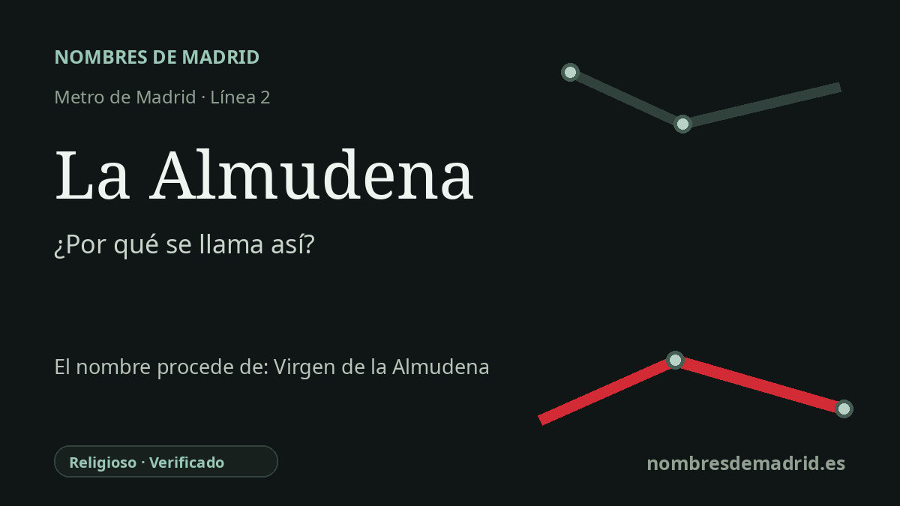

Publicado el · Investigación de Nombres de Madrid · Cómo verificamos cada origen · 8 fuentes consultadas
Respuesta rápida
La estación de La Almudena toma su nombre del cercano Cementerio de Nuestra Señora de la Almudena, llamado así por la patrona de Madrid. La palabra Almudena suele explicarse a partir del árabe al-mudayna, 'la ciudadela' o recinto amurallado del Madrid primitivo.
La historia del nombre
La estación de La Almudena no toma su nombre de una calle del Madrid antiguo. El nombre remite al gran cementerio situado en sus inmediaciones: el Cementerio de Nuestra Señora de la Almudena, en la avenida de Daroca. La página regional de la prolongación de la línea 2 describe la estación como situada junto a ese cementerio, y el Ayuntamiento incluye el metro La Almudena entre los accesos al recinto funerario.
El nombre del cementerio conduce a la Virgen de la Almudena, patrona de Madrid. La página turística municipal explica que el cementerio recibe su nombre de la Virgen, y la denominación oficial completa mantiene visible la advocación: Nuestra Señora de la Almudena. Por tanto, el nombre del metro es primero local y topográfico, pero su origen profundo es religioso.
Detrás de la advocación está una de las grandes tradiciones medievales de Madrid. Almudena suele explicarse a partir del árabe al-mudayna, con el sentido de ciudadela o recinto fortificado, asociado al primer Madrid amurallado en torno al actual Palacio Real y la catedral. La tradición cuenta que los cristianos ocultaron una imagen de la Virgen en la muralla durante el periodo musulmán y que apareció cerca de la Puerta de la Vega tras la toma de Madrid por Alfonso VI.
La cronología es menos firme que el relato. Algunos materiales educativos y de la Catedral de Madrid dan 1083 para la entrada de Alfonso VI en Madrid, mientras que otras versiones vinculan el hallazgo al 9 de noviembre de 1085. Los detalles famosos del muro que se abre, las flores o los cirios encendidos pertenecen a la tradición devocional, no a una documentación medieval segura.
La estación pertenece a una etapa muy posterior. Se abrió el 16 de marzo de 2011 como una de las cuatro paradas de la prolongación de la línea 2 hacia Las Rosas, junto con Alsacia, Avenida de Guadalajara y Las Rosas. Su nombre enlaza así una parada moderna de transporte con la gran necrópolis oriental de Madrid y, a través de ella, con la patrona de la ciudad, la capa toponímica árabe del Madrid medieval y la fiesta madrileña de la Almudena del 9 de noviembre.